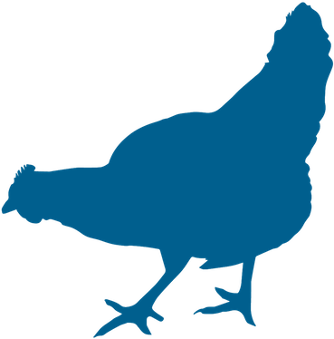
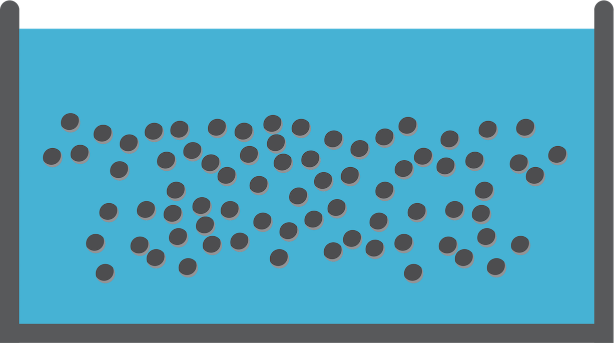
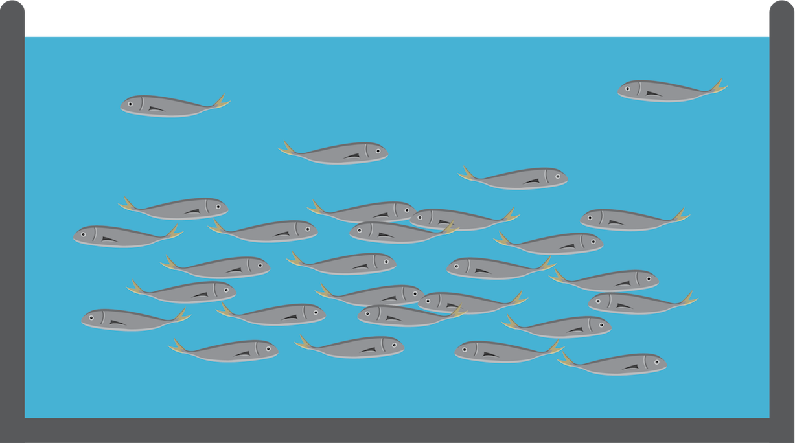

Issues and weaknesses of livestock farming
•Requires large quantities of water
•Restriction of space
•Conditions of captivity and bad animal welfare
•Management of farming wastes
•Cannot meet the ever increasing needs for animal protein, from meat and other products.
•Requires large quantities of water
•Restriction of space
•Conditions of captivity and bad animal welfare
•Management of farming wastes
•Cannot meet the ever increasing needs for animal protein, from meat and other products.


Bottom Trawling More
More
More
Purse seine More
More
More
Drifting longlines More
More
More
Boat seine More
More
This is a particularly disastrous and wasteful method. During trawling, the sea bottom is dredged and a great number of organisms get crushed to death or accidently caught in the nets. Small or noncommercial fish discarded into the sea injured or dead. Bottom trawlers dispose 30-70% (by weight) of their catches back to the sea.
More
Fish
landing
landing
Central fish auction site
Local
fish market
fish market
Consumer’s
plate
plate
The fish are usually landed at the port, transported to a central fish auction site, and then distributed to local stores ultimately ending up on our plate.
Advantages
•Freshness
•Large variety of species
•Direct contact with the seller
Disadvantages
•Reduced wild fish
stocks due to overfishing
•Negative impact of fishing methods
also on non-commercial species
•Negative impact of fishing methods on the environment
The commonly farmed species, about 95% of total production, in Greece are sea bream and sea bass. Recently, there is an effort to increase the number of famed species with new species such as pagrus, dentex etc. Especially, Red porgy is a popular dish in many restaurants, though it is a fairly expensive fish. Its successful farming will lead to the reduction in both its price and the pressure on its wild stocks.

1. Broodstock is kept in tanks under controlled conditions in small groups of with a specific sex ratio.

2. Male fish release sperm and female fish eggs. The fertilization of the eggs takes place in the water. A few hours after the fertilization the fish eggs begin to hatch.
 3. The juveniles pass into the ongrowing phase.
3. The juveniles pass into the ongrowing phase.
 4. They are transported to fish cages at the sea where the main farming stage begins.
4. They are transported to fish cages at the sea where the main farming stage begins.
 5. When they reach the commercial size they are harvested using nets.
6. Packaging and storage on ice.
5. When they reach the commercial size they are harvested using nets.
6. Packaging and storage on ice.
quality controls following specific
certification systems.
variety of products:
•Whole fish
•Fillet
•Slice
to the consumer